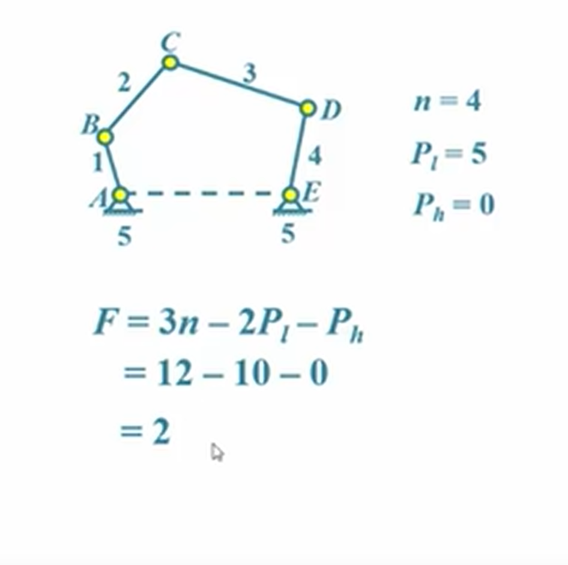
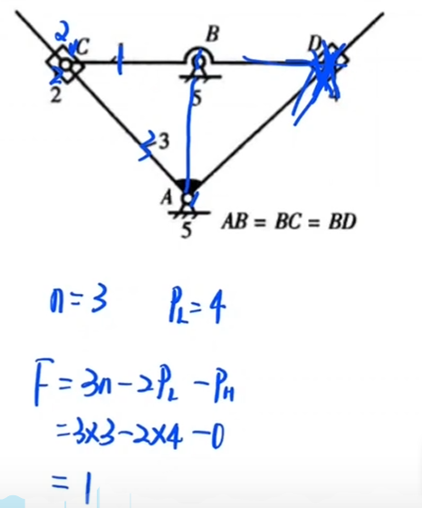
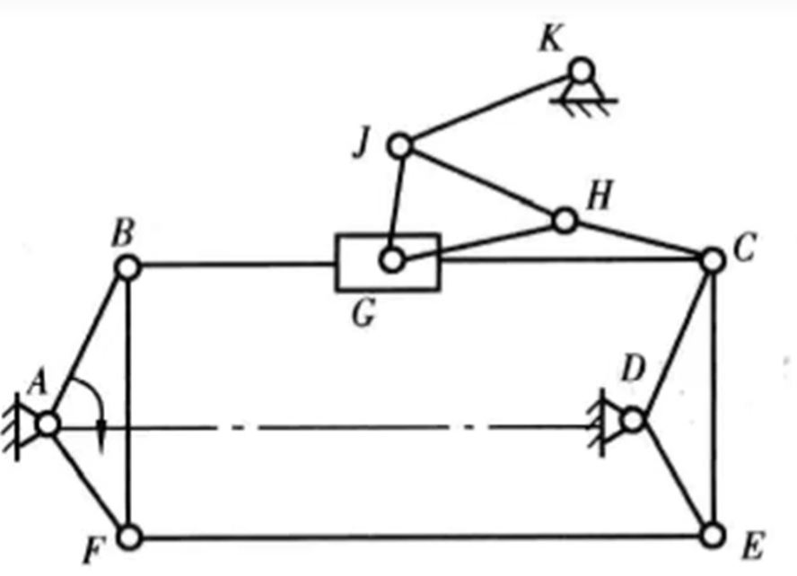
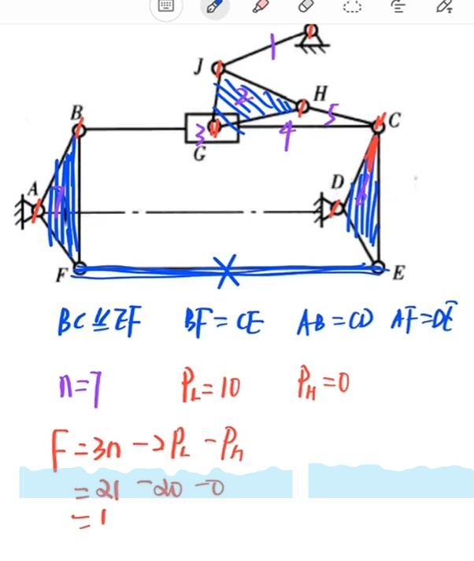

机械原理基础
一、机械传动
（一）旋转传动
1. 正齿轮 ：

- 有若干组齿轮组成，分为主动轮和从动轮
- 传动比i=Z2/Z1（其中Z1是主动轮齿数,Z2是从动轮齿数，以下提到的1和2都分别对应主动和从动）
- 传动比作用：
- 降速，n2=n1/i
- 提高输出扭矩，从动轮输出转矩=电机输出转矩*i
- 降低负载惯量，从动轮折算到主动轮这边的惯量J3=J2/i^2，惯量按传动的平方倍减小
- 优点：
- 成本低
- 结构简单
- 适合功率传递
- 缺点：
- 传动精度差
2. 涡轮蜗杆减速器

-
由涡轮和蜗杆组成齿轮
-
蜗杆是主动件，涡轮是从动件
-
用于传动框架交错轴之间的运动和动力，一般输入轴和输出轴之间成90度角
-
优点：
- 单机减速比很大
- 可反向自锁（使减速器在电机断电的情况下可以保持机械结构不下落，可以起到和电机抱闸类似的功能）
- 适合功率传递
-
缺点：
- 轴向力大
- 易发热
- 机械效率低，具有自锁性的蜗杆传动，其效率在50%以下
3. 行星减速器

-
组成：内齿圈（固定在减速器壳体上，不动的 ）、太阳轮（由电机驱动是主动轮）、行星轮（固定在行星架上，绕着内齿圈旋转，动力从太阳轮输入再通过行星架将动力传递到输出轴上、行星架）
-
减速比：i=（内齿圈齿数/太阳轮齿数）+1
-
一般情况下，具有单机减速齿轮组的行星减速机减速比通常在3-10之间；速比超过10以上的行星减速机，需要使用两级或以上的行星齿轮组减速
-
行星轮总齿数=内齿圈齿数+太阳轮齿数
-
优点：
- 体积小、质量小、结构紧凑、承载能力大
- 传动效率高，通常可达97%以上（传动效率是指在机械传动系统中，输出功率与输入功率的比值，通常以百分比表示 ）
- 传动比大
- 运动平稳、抗冲击和震动能力强
- 适合精密传动
-
缺点：
- 材料优质、结构复杂、制造和安装比较困难
- 成本高
4. RV减速器

-
用于转矩大的机器人腿部腰部和肘部三个关节，负载大的工业机器人，一二三轴都是RV
-
优点：更高的疲劳强度、刚度和寿命
-
缺点：重量大，外形尺寸大
5. 谐波减速器：

-
用于负载小的工业机器人或大型机器人末端几个轴，谐波减速器是谐波传动装置的一种，谐波传动装置包括谐波加速器和谐波减速器。谐波减速器主要包括：刚轮、柔轮、波发生器、轴承
-
优点：体积小、质量轻、承载能力大、运动精度高、单级传动比大
-
缺点：使用时间增加后运动精度显著降低
RV和谐波对比 ： -
谐波减速器结构简单紧凑，适合小型化、低、中载荷的应用
-
RV减速器刚性好、抗冲击能力强、传动平稳、精度高，适合中高载荷的应用。RV减速器的额定扭矩岁输入转速的下降非常明显
（二）直线传动
1. 同步带传动


-
组成：同步带、同步带轮（同步带和同步带轮上有相互啮合的齿和槽，防打滑）

-
优点：
- 直线速度高，中等精度
- 推力不大，成本低
- 安装简单，加工、装配精度要求不高
-
缺点：
- 柔性系统，高速长距离运行较难控制
2. 齿轮齿条传动

-
组成：齿轮和齿条
-
优点
- 直线速度高
- 中等推力，成本低
- 安装简单，加工装配精度要求中等
- 适合长距离运行
-
缺点：有磨损问题
3. 丝杠传动

-
组成：直线导轨、滚珠丝杠、螺母、电机座
-
滚珠丝杠作为主动体，螺母随丝杠转动按照相对应规格的导程转化为直线运动，物体可以通过螺母座和丝杠螺母连接，从而实现对应的直线运动
-
优点：
- 推力大
- 精度高
-
缺点：
- 直线速度较低
- 行程有限制
- 成本高
- 安装复杂
- 加工、装配精度要求高
-
导程 ：丝杠或螺母旋转一周，螺母在丝杠上移动的距离
-
螺距 ：相邻两条螺纹之间的距离，有螺距=导程/线数

二、自由度分析
（一）基本概念：
1. 构件：


2. 运动副：


（二）自由度计算
1. 基本公式

-
可动：注意不可动的构件不要算进来，如下图中的AE：

-
低副：面接触,一般有移动副和转动副（即只能沿一个方向平动或转动的运动副

-
高副：点、线接触，如凸轮副、齿轮副

e.g.

2. 复合铰链


假设复合铰链由n个构件组成，则复合铰链相当于n-1个低副
3. 局部自由度

4. 虚约束


比如平行结构上的重复构件
5. 高副低代
将一个高副转换为一个连杆加两个转动副的低副
上图中的高副和低副自由度等价（K1是C处曲率圆半径）注意：

6. 实例
e.g.1

其中EF为虚约束，E点运动副不需要算，G、I处只用算一个高副，I处里面还有一个移动副不要漏算
e.g.2

D为虚约束
e.g.3

其中EF为虚约束，ABF、DCE、GHJ为三角形具有稳定性所以直接看成一个构件
等效于这个：

三、机构分析
（一）铰链四杆机构


（二）压力角、传动角、死点

注意：
-
以上所说的驱动力和运动速度是从动件的受力点的运动情况，比如下图：

从动件指的是杆不是滑块 -
上图中滑块的力之所以垂直于导线可以参考高中的斜劈上放滑块的模型，两者之间的力为垂直方向的力

（三）四杆机构图解法
极位夹角：曲柄两个极限位置的夹角θ<90°（极限位置：有连杆共线的位置）曲柄推程和回程之比，使用极位夹角通过几何关系推导得：$$K=\frac{180\circ+\theta}{180\circ-\theta}>1$$


（四）速度瞬心
瞬心 ：两构件上绝对速度相等（相对速度为0）的点，绝对速度为0的为绝对瞬心，否则为相对瞬心
n个构件（包括机架）有$$\frac{n(n+1)}{2}$$个瞬心
0.对速度瞬心的个人理解
空间刚体A上某一点P的运动可以用刚体平动速度$$\mathbf{V_{A}}$$ 和刚体自转速度$$\mathbf{\omega_{AP}}$$来表示，且若任取一点Q，我们还可以用$$\mathbf{V_{Q}}+\mathbf{V_{PQ}}$$来计算P的速度，但如果我们选取的Q点满足这两个要求：$$\mathbf{V_{Q}}=\mathbf{0}$$且PQ间只存在圆周相对运动（比如可以使P和Q位于同一刚体来满足），则P的绝对速度就可以直接用PQ之间的相对角速度乘以PQ间距离来表示
1.直接接触的两构件

就是12连接处
移动副的瞬心在垂直导轨的法线上的无限远处
如果是纯滚动，则就是接触点
如果是滑动，则在公法线上某一点
2.非直接接触的两构件
三心定理：三个构件的3个瞬心位于同一直线


（五）凸轮

1. 理论轮廓：

如图蓝色圆圈
2. 基圆：

如图红色圆圈
3. 偏距圆

如图绿色圆圈
4. 行程

如图黄色所标
（六）齿轮
齿根圆直径df=m（z-2.5）
齿顶圆直径da=m（z+2）
分度圆直径d=mz
基圆直径db=d·cosa，其中d为分度圆直径，a为压力角，一般为20度，两个齿轮啮合的条件为压力角和模数相同
齿根高（齿根圆和分度圆之间沿半径方向的距离）=1.25m
齿顶高（齿顶圆和分度圆之间沿半径方向的距离）=m
齿厚s=mz/2
（七）涡轮蜗杆
1. 判断旋向
掌心向自己，四指向轴线方向，看右手和螺旋线方向平不平行反之左旋
2. 判断转向
-
判断旋向，左旋用左手，右旋用右手